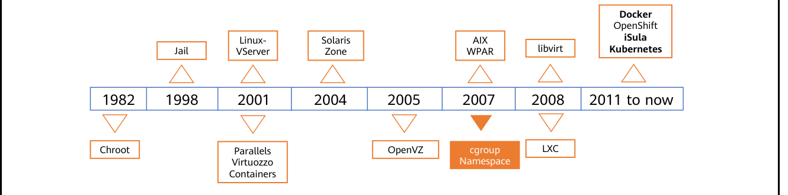
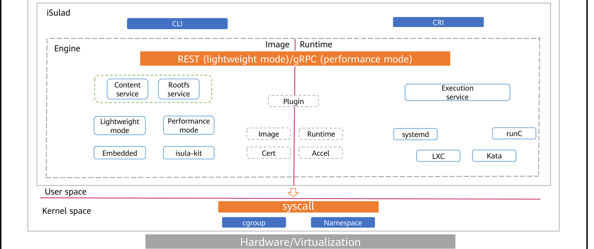
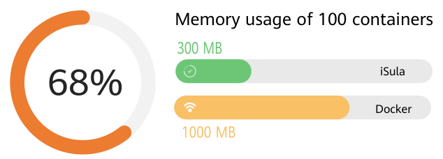
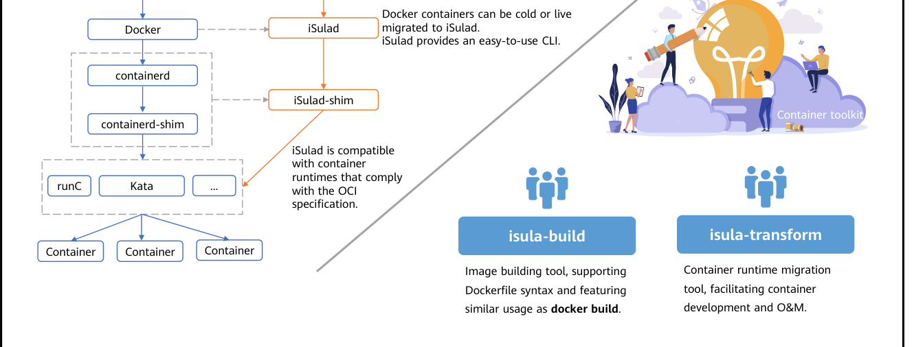

cgroups) & iSula Architecturecgroups (resource limitation in /sys/fs/cgroup)iSula (iSulad) is, why it is written in C/C++ instead of Go, and its Northbound (CLI/CRI) and Southbound (OCI: LCR, runC, Kata) architectureisula-build), Easy-to-Use (isula-transform), and Flexible (REST vs. gRPC) advantagescgroupsContainer technology evolved from chroot (1982), FreeBSD Jail (1998), Linux-VServer (2001), Solaris Zone (2004), OpenVZ (2005), cgroups & Namespaces (2007), LXC (2008), to Docker, iSula, and Kubernetes (2011–now).
Encapsulates global kernel resources so processes in different namespaces are isolated from each other:
| Namespace Type | System Call Parameter | Isolated Resource | Kernel Version |
|---|---|---|---|
| PID namespace | CLONE_NEWPID | Process IDs | Linux 2.6.24 |
| Mount namespace | CLONE_NEWNS | File system mount points | Linux 2.6.19 |
| Network namespace | CLONE_NEWNET | Network devices, IP addresses, ports | Linux 2.6.24–2.6.29 |
| User namespace | CLONE_NEWUSER | User IDs (UIDs) and Group IDs (GIDs) | Linux 2.6.23–3.8 |
| UTS namespace | CLONE_NEWUTS | Host names and domain names | Linux 2.6.19 |
| IPC namespace | CLONE_NEWIPC | Semaphores, message queues, shared memory | Linux 2.6.19 |
cgroups (Linux Control Groups) — Function: Resource Limitation (Ch.07, p.392):/sys/fs/cgroup.
---
iSula / iSulad & Its Unified ArchitectureiSula? Mainstream engines like Docker and containerd are written in Go, which incurs high memory overhead in resource-constrained edge computing, IoT, and high-density server scenarios. iSula is openEuler's native container solution implemented in C/C++, featuring a unified architecture for CT and IT fields (system, secure, common, and embedded containers).isula) and CRI (for Kubernetes orchestration).iSulad): Image Service, Execution Service, Content Service, and Rootfs Service (separated to isolate operations).runC, and Kata.
---
fork/exec + direct function calls and separated rootfs/image services.isula-build) via DAG-based building (unlike docker build, isula-build does not start a container for every Dockerfile instruction—only for necessary instructions like RUN).isula-build (Dockerfile image builder) and isula-transform (cold/live migration tool converting Docker containers to iSulad).
